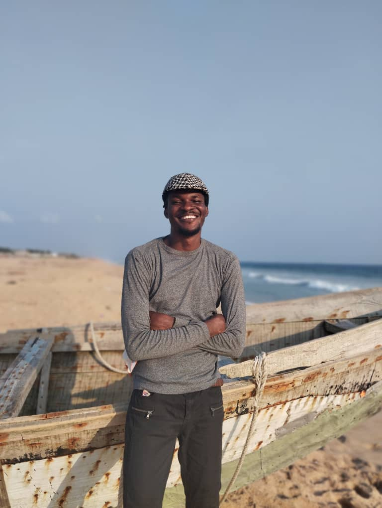

Emmanuel Igwe|WDD 130
hello! my name is Emmanuel Igwe from Lagos Nigeria. I am a student of Brigham Young University Idaho and i major in Applied Technology. I love music and I love trying out new things. I hope to be one of the best programmer in the nearest future. one thing I also wish to do in the future is to travel places. These are things I would really love to do before i live the mortal state